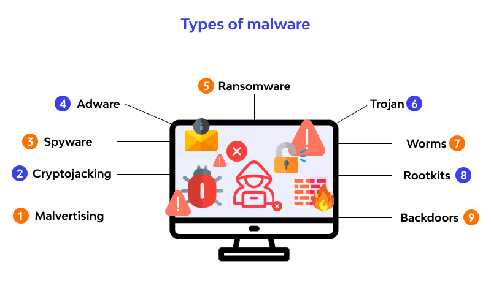
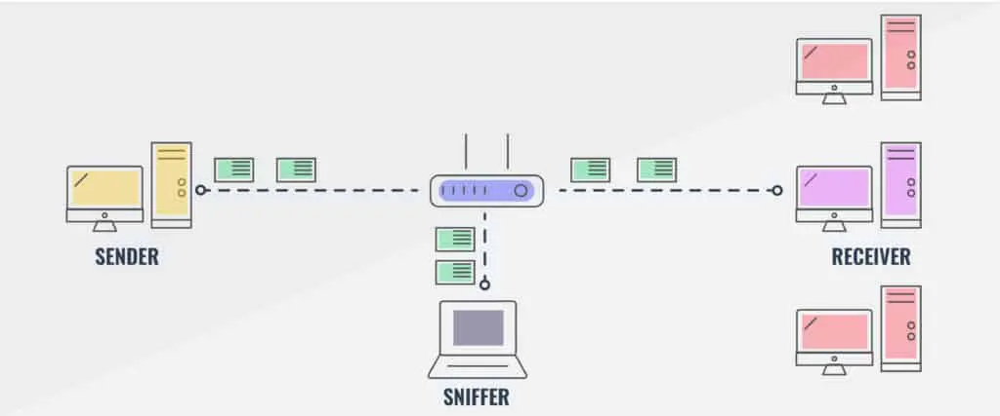
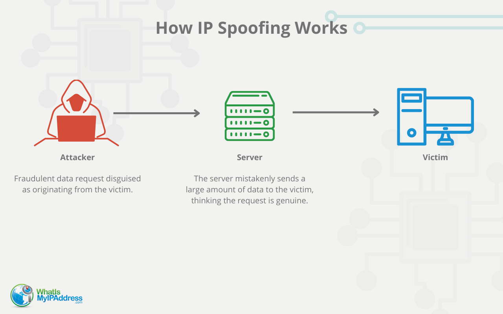

ID: 1221140
Skills: Machine Learning, Python
Projects: Chatbot, Calculator
Hobbies: Chess, Coding
ID: 1223061
Skills: Java, Problem solving
Projects: ecommerece, Game Dev
Hobbies: Football, Swimming
Network security is a crucial field that focuses on understanding and defending against attacks on computer networks. This includes learning how attackers operate and how to design systems that are resistant to these threats.
The Internet was not originally built with strong security in mind. It was designed for "a group of mutually trusting users attached to a transparent network." Today, protocol designers are constantly working to catch up, considering security in all layers of the network!
Bad Guys: Malware can infect hosts in several ways:
Additionally, spyware malware can:
Infected hosts may become part of a botnet, used for sending spam or launching Distributed Denial of Service (DDoS) attacks.
Denial of Service (DoS) attacks overwhelm a server or network resource with fake traffic, making it unavailable for legitimate users.
The attack steps are:
Using packet sniffing, attackers can intercept network traffic and capture sensitive information like passwords. This happens especially in:
A promiscuous network interface can read all passing packets. A popular tool for packet sniffing is Wireshark.
IP spoofing involves sending packets with a false source address to disguise the attacker’s identity.
